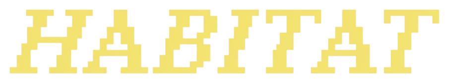

Cafe Discovery /
Design + Code
Design + Code
Co-Founder @ WIIRED Studio · CS + Data Science @ UW
I overthink interfaces so you don't have to :)

Habit Tracker /I'm a third-year Computer Science student at the University of Washington, minoring in Data Science. I got into this work by noticing the small frustrations in the apps I already used, and wondering what a kinder version might look like. That curiosity turned into brew., WIIRED Studio, and a habit of designing things until they're worth building. I care about people-centered problems: cafés that are easier to discover, hackathons that are easier to run, and data that's easier to understand.